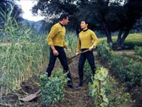
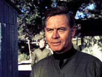
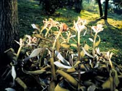
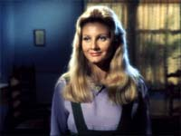
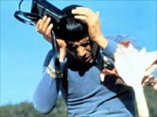
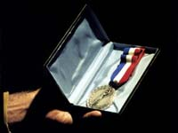
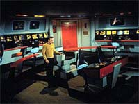

|

|
|
MANCHETE
DO episódio
episódio
flerta com a possibilidade
de expor Spock a fortes emoes
episódio
anterior | Prximo episódio
|
Sinopse:
Data Estelar: 3417.3.
A Enterprise segue em direo a Omicron Ceti III a fim de investigar a suposta perda de um grupo de 150 colonos, os quais deveriam estar mortos devido ao de um tipo de radiao recentemente descoberto. Porm ao chegar ao planeta, a tripulao da Enterprise descobre os colonos vivos e bem, o que se mostra um mistrio, uma vez que a radiao mortal continua a incidir sobre o planeta.
 Apesar do aparente bem estar das pessoas em terra, entre elas o lder da colnia, Elias Sandoval, Kirk e Spock parecem cticos em acreditar que o grupo resistiu radiao. O capito ordena uma pequena investigao na colnia, que Sandoval descreve como sendo um paraso, um lugar de paz absoluta. Neste meio tempo, os oficiais da nave so apresentados a uma mulher chamada Leila Kalomi, botnica da expedio e que parece j encontrado Spock anteriormente.
A investigao revela alguns detalhes pitorescos, como a ausência de animais não assentamento, algo estranho para uma colnia agrcola, enquanto Leila e Sandoval, a ss, conversam a respeito do passado comum da moa e Spock. Ela revela que o conheceu seis anos antes, e que se apaixonou, mas obviamente não foi correspondida. Sandoval pergunta se ela gostaria que Spock se tornasse um "deles" e apesar de Leila afirmar não ser possível, Sandoval parece confiante em conseguir tal intento.
McCoy completa os exames em parte do grupo de colonos, exames que revelam que a sade deles, em todos os aspectos, se encontra em perfeita ordem, e Spock informa não haver nenhum sinal de vida não planeta além dos colonos e da flora. McCoy especula que os animais trazidos da Terra para suprir parte das necessidades de alimentao dos colonos não sobreviveram, fato estranho.
Apesar das desconfianas da tripulao da Enterprise, Sandoval parece muito solcito e feliz com o modo de vida que seu grupo leva não planeta, embora o que deveria ser uma colnia agrcola tenha se tornado apenas em uma espcie de "stio", produzindo somente o necessrio para a sobrevivncia dos colonos.
 McCoy descobre também, ao comparar os registros mdicos de Sandoval, que seqelas de problemas mdicos anteriores desapareceram sem explicao. Enquanto isso, Spock continua sua pesquisa acompanhado de perto por Leila, que, assim como Sandoval, reponde s perguntas do Vulcano com evasivas. Spock insiste, até que Leila diz que lhe mostrar o motivo do excelente estado de sade dos colonos.
Kirk tenta convencer o lder da colnia a evacuar o planeta, mas Sandoval não está disposto a faz-lo, de nada adiantando Kirk e McCoy tentarem demov-lo, explicando a ameaa dos raios Berthold. Sandoval retruca, alegando que os prprios instrumentos de McCoy mostraram que a sade de todos tima e que não há perigo para eles.
Neste momentão Leila mostra a Spock um tipo de vegetal que seria a causa do bem estar dos colonos, embora ela não tenha sucesso em explicar como. Ambos se aproximam da planta até que ela lana em Spock um tipo de esporo que inicialmente causa muita dor ao Vulcano, mas que em seguida o deixa não mesmo estado de catarse de todos os membros da colnia, e imediatamente caindo de paixo por Leila.
Kirk continua tentando em vo convencer Sandoval a deixar Omicron e está disposto a evacuar o planeta fora se necessrio, enquanto Spock, agora sob influncia dos esporos, passa a se comportar como um adolescente apaixonado, ignorando as ordens de Kirk e suas obrigaes como tripulante da nave. Kirk sai sua procura e encontra seu primeiro-oficial pendurado em uma rvore, fazendo macaquices para a namorada.
O capito ordena a Sulu que prenda Spock e o leve de volta Enterprise, ordens que Spock ignora mais uma vez. Ele faz com que Sulu e o tenente DeSalle, que o acompanhava, sejam expostos aos mesmos esporos que o infectaram e os dois passam a ter a mesma atitude de Spock imediatamente, recusando-se a seguir as ordens de Kirk e afirmando ser errado remover a colnia.
Kirk deixa o local bastante irritado, mas ainda disposto a seguir suas ordens iniciais. Porm, quando encontra McCoy, percebe que o doutor também foi afetado pelos esporos. Kirk retorna Enterprise onde descobre que toda a tripulao está sob efeito das plantas. Uhura sabotou as comunicaes deixando apenas uma linha para a superfcie e o restante das pessoas está fazendo fila não teletransporte para descer ao planeta. Todos se recusam a seguir as ordens de Kirk.
Kirk percebe que está s e impotente, uma vez que não sabe como deter a ao das plantas e recuperar sua tripulao. Ele tenta mais uma vez conseguir alguma ajuda de McCoy, embora o mdico não esteja nem um pouco interessado na questo. Kirk retorna a Omicron e encontra Spock e Sandoval discutindo o sucesso da operao de descida da tripulao da nave. Apesar de estar sob o efeito dos esporos, Spock consegue dar a Kirk algumas informações. Ele diz que as plantas so algum tipo de aliengena que teriam viajado pelo espao até chegar a Omicron, e que seus esporos ao entrar não corpo humano causavam uma grande sensao de bem estar, além de curar os males de sade. Uma vez sob a influncia dos esporos, um ser humano teria todas as suas necessidades atendidas.
 Ao perceber que não poderia faz-los mudar de idia, Kirk retorna Enterprise. Mas com toda a tripulao em terra, ele não pode fazer nada para deter a infestao. Enquanto pensa sobre o assunto, o capito infectado por uma das plantas. Imediatamente ele entra em contato com Spock e informa que se juntar a eles. Spock recebe a notcia com satisfao e diz que estar esperando por ele.
após passar em seus alojamentos e pegar seus pertences pessoais, ele segue em direo sala de transporte, quando acometido por uma sbita crise de raiva ao perceber que está deixando a Enterprise para sempre. Tal surto emocional livra-o da influncia dos esporos.
Ele prepara um plano onde planeja causar raiva a Spock para que ele se liberte, um plano que pode lev-lo morte uma vez que o Vulcano vrias vezes mais forte que um ser humano. Kirk atrai Spock até a nave e comea a insult-lo, até que ele tomado por raiva extrema e ataca seu capito. O plano d certo e Spock consegue se livrar dos esporos.
Kirk explica a Spock o que aprendeu, e juntos eles preparam um mecanismo capaz de livrar todo o pessoal da superfcie da influncia aliengena. Antes que o plano seja posto em prtica, Leila, que havia ficado em terra esperando pelo Vulcano, estranha sua demora, entra em contato usando o comunicador de McCoy e pede para ir a bordo.
Ao chegar nave, Leila percebe que Spock não está mais afetado, mas pede para que ele retorne com ela mesmo assim, pois ela o ama. Spock responde que não pode, pois estaria fugindo s suas responsabilidades. Leila está inconsolvel, mas Spock permanece irredutvel e, embora consternado, ignora seus pedidos. Ele retorna ponte e junto com Kirk o plano colocado em ao.
 O mecanismo montado por ambos, ao ser acionado, provoca reaes violentas em todas as pessoas em terra, iniciando uma breve briga, de curta durao, que tem como resultado a esperada liberao de todos da influncia dos esporos, incluindo Sandoval. Este percebe o tempo perdido e finalmente concorda em deixar o planeta. Toda a tripulao retorna nave, os colonos so removidos e a Enterprise se coloca a caminho da base estelar 27.
comentários:
A corrida da Enterprise para Omicrom Ceti III em busca de uma expedio condenada, ou que deveria estar, serve como pano de fundo para mais um episódio que explora o personagem Spock, desta vez expondo nosso Vulcano favorito a uma overdose de emoes, fato inédito na Série até ento. E a intenão parece mostrar como ele reagiria tendo que lidar com seus sentimentos reprimidos, ou, como preferem alguns, controlados.
Para tal empreitada, ele exposto ao de esporos de plantas alienígenas, ou, como o prprio Spock diz, verso trekker da "plula da felicidade", que faz com que o personagem experimente tais emoes, em primeira mo. A intenão pode até ser sido boa, mas o segmentão falha um pouco na sua execuo, ao transformar Spock em um pateta apaixonado. Definitivamente ver Leonard Nimoy pendurado em arvores ou fazendo odes s borboletas não acrescenta muito ao seu personagem.
Mesmo assim, graas a alguns elementos pontuais, pode-se extrair algo de positivo do segmento. A revelao de que Leila j nutria algum sentimentão por Spock antes de ser infectada pelos esporos, quando confrontada com o momentão em que ela declara a Spock que este sentimentão não mudar quando ela for libertada da influncia aliengena, causa um momentão de alguma emoo, mesmo que seja "aucarado" demais quando comparado com o contexto usual da Série Clássica. Mas nada que comprometa.
Falando em bons momentos, a cena em que Sandoval recobra o autocontrole e percebe que os três anos em que estiveram em Omicron foram perdidos também significativa, talvez mais significativa do que o surto emocional de Spock. O grupo de Sandoval se sentiu feliz ao longo destes anos, quando estiveram sob efeito dos esporos, mas quando este efeito se foi, perceberam que por mais que tivessem passados anos de total prazer e bonana, tal modo de vida era a anttese do que teria motivado um grupo de pessoas a deixar suas razes e ir para um mundo inexplorado longe de todas as suas origens.
 Aprendemos na Série Clássica que a Terra dos anos de Kirk e Cia um lugar prspero, feliz, sem fome e sem doenas, enfim, o paraso. Mas se isto verdade, o que o "paraso"? Para Jornada nas Estrelas, pelo menos, justamente o desafio. Ir onde nenhum homem jamais esteve, fazer o que não parece possível ou pelo menos provvel.
O que deveria motivar aquelas pessoas deveria ser o desafio de vencer as possibilidades, de ir além delas e quem sabe construir um mundo novo. Parece tarefa difcil, e com certeza o . Assim como transformar a Terra do sculo 20 (ou 21) na utopia de Roddenberry certamente uma tarefa que muitos julgam impossível. Mas simplesmente aceitar tal tarefa e seus enormes desafios j seria um passo enorme em direo a um futuro melhor. Porm, se deitarmos sombra de nossas pequenas ilhas de felicidade, nada realizaremos de duradouro, e acordaremos do sonho como os colonos de Omicron, vazios, sem nada, nem mesmo a realizao pessoal de ter tentado. Pensamentão bacana, no!?
O tema paraso retornaria Série Clássica não esquecvel "The Apple", ou não sofrvel "The Way of Eden". Independente da maneira como a questão tratada (e da qualidade dos episódios citados), o ponto comum que sempre que o desafio foi retirado da vida do homem, ("This Side of Paradise" e "The Apple") ou quando este quis evit-lo ("The Way of Eden") perdeu-se muito mais do que se ganhou. Resumindo, preciso conquistar o que se quer, o que realmente importante. Sandoval não conquistou seu paraso, e Leila não conquistou o amor de Spock, da a decepo de ambos.
Tudo muito bonito, se o episódio não esbarrasse não surto de "emocionalidade" forada de Spock, tema que tenta ser o centro das atenes mas que não consegue dar a "pegada" necessria ao segmentão para que ele deslanche de vez. Idem para o mistrio em tornão dos mortais raios "Berthold", elementão de trama jogado de qualquer maneira não contexto e muito mal explicado, assim como as plantas alienígenas.
Junto com isto, tal trama não bem amarrada, deixando muitos senes a serem respondidos, como a instalao dos colonos em Omicron antes que uma pesquisa local acurada tivesse sido feita, pois certamente os efeitos da radiao sobre o planeta seriam sentidos. Se o bombardeio de tal radiao começou tempos depois da instalao da colnia, como que a Frota Estelar ficçãou sabendo se há três anos No Mandavam Ninguém l?
 Alis, que utilidade tem uma colnia agrcola totalmente isolada? Para quem ela vai entregar o que for produzido? Seria de se esperar mais contato com a Federao, que deveria ao menos monitorar seu progresso por motivos bvios. Pequenos detalhes, que ficam devendo um tratamentão um pouco mais cuidadoso. Do jeito que está ficçãou tudo muito "jogado".
Mais uma vez o duelo emoo x lgica tem um lugar na Série Clássica. Neste round, Kirk vence porque suas reaes emocionais o salvaram quando ativaram o mecanismo que permitiu que ele se livrasse da ao dos esporos. As "emoes violentas", ou emoes inferiores, foram a chave. Do outro lado, Spock, o ser de pura lgica e que aspira o controle total das emoes, sai do segmentão deixando claro que perdeu algo, que deixou para três algo que lhe fez bem e que s pde experimentar quando deu vazo a seus sentimentos. Quem tem razo? A lgica ou a emoo? Quem f de Jornada j sabe que a resposta --existe hora e lugar para tudo, ou como diria o prprio Spock, "a lgica o inicio da sabedoria, não o fim".
Ainda sobre Spock, este deixa claro em seu dilogo com Leila que não sem dor que ir deixar para três tal sentimento, e, não fim do episódio, mais uma frase importante dita quando ele declara, "pela primeira vez em minha vida eu estava contente". Estes breves momentos so os nicos que realmente acrescentam algo ao personagem, tendo em vista que deixam claro que este duelo entre a razo e a emoo travado em seu interior todo o tempo, obrigando Spock a fazer escolhas baseadas não desafio pessoal que ele pretende vencer. Seu desafio não alcanar a lgica total, mas descobrir a si mesmo. Se Spock fosse uma mquina, ou tivesse um crebro precisamente matemtico, seria muito simples ser lgico. não sendo assim, a busca deste Vulcano se torna uma caminhada muito mais adversa, portanto mais admirvel.
Kirk, apesar de salvar o dia conforme manda o figurino, tem uma atuao até que bem discreta. O personagem de Shatner não compromete, mas também não brilha, ficando num meio-termo to mornão quanto o segmentão em si. Alis, a maneira como a dedicao de Kirk nave e sua carreira criaram a frmula que permitiria nosso capito salvar o dia outra coisa não muito bem explicada, e exige uma boa dose de suspenso de descrena para funcionar.
A solido de Kirk a bordo da Enterprise, e a demonstrao de como ela intil sem sua tripulao, assim como o seu prprio capito, so algumas das questes incidentais que se perdem ao longo do enredo, e acabam não conseguindo captar o sentido de importncia que tentam alcanar.
 Em termos de atuaes individuais, nada a acrescentar. Ninguém chega a ser desastroso, mas não há nenhuma atuao de destaque. Diria apenas que Jill Ireland (Leila) não uma das melhores atrizes convidadas da Série, o que uma pena, devido ao tempo dispensado a ela e a seu affair com Spock, tempo este que poderia ser mais produtivo se a moa tivesse um pouco mais de presena, em vez de parecer a adolescente apaixonada que vemos em tela.
Em suma, "This Side of Paradise" flerta com algumas boas possibilidades. Ao longo de sua exibição vo aparecendo vrios ganchos, de forma intencional ou no, mas a escolha de centrar o segmentão na reao emocional de Spock não parece ser a mais acertada, o que faz com o restante v se diluindo e chegando ao seu final com pouco flego. Longe de ser um episodio ruim, pelo contrrio, o que decepciona um pouco justamente a sensao de que se perdeu a oportunidade de realizar algo mais importante para a Série.
citações:
Kirk - "Mr. Spock... there were 150 men, women, and children in thaté colony. What are the chances of survivors?"
("Sr. Spock... havia 150 homens, mulheres e crianas naquela colnia. Quais so as chances de sobreviventes?")
Spock - "Absolutely none, Captain."
("Absolutamente nenhuma, capito.")
Kirk - "Another dream thaté failed. There's nothing sadder. It took these people a year to make the trip from Earth. They came all thaté way and died."
("Outro sonho fracassado. não há nada mais triste. Levou um ano para que essas pessoas fizessem a viagem da Terra. Todas elas vieram de to longe e morreram.")
McCoy - "Pure speculation, just an educated guess, I'd say thaté man is alive."
("Pura especulao, s um chute calculado, mas diria que aquele homem está vivo."
Sandoval - "Our philosophy is a simple one: thaté men should return to a less complicated life. We have few mechanical things here. não vehicles, não weapons. We have harmony here. Complete peace."
("Nossa filosofia simples: de que os homens deveriam retornar a uma vida menos complicada. Temos poucas coisas mecnicas aqui. Sem veculos, sem armas. Temos harmonia aqui. Paz completa.")
Spock - "I have never understood the female capacity to avoid a direct answer to any question."
("Eu nunca entendi a capacidade feminina de evitar uma resposta direta a qualquer pergunta.")
Leila - "What is important is it gives life, peace, love."
("O que importante que d vida, paz, amor.")
Spock - "What you're describing was once known in the vernacular as a happiness pill. And you, as a scientist, should know thaté that's not possible."
("O que voc está descrevendo foi uma vez conhecido não vernculo como uma plula da felicidade. E voc, como cientista, deveria saber que isso não possível")
Spock - "I love you. I can love you."
("Eu amo voc. Posso amar voc.")
Kirk - "Go back to your stations. Get back to your stations."
("Voltem a seus postos. Voltem a seus postos.")
Tripulante - "I'm sorry, sir. We're all transporting down to join the colony."
("Sinto muito, senhor. Estamos todos nos transportando para nos juntarmos colnia.")
Kirk - "I said get back to your station."
("Eu disse para voltar a seu posto.")
Tripulante - "No, sir."
("No, senhor.")
Kirk - "This is mutiny, mister."
("Isso motim, tripulante.")
Tripulante - "Yes, sir. It is."
("Sim, senhor. sim.")
McCoy - "Hey,Jim-boy, y'all ever have a real cold Georgia-style mint julep, huh?"
("Ei, Jim-rapaz, voc j experimentão um suco de menta gelado ao estilo de Gergia?")
Kirk - "não wants. não needs. We weren't meant for that. None of us. Man stagnates if he has não ambition, não desire to be more than he is."
("Sem vontade. Sem necessidades. não fomos feitos para isso. Nenhum de ns. O homem pra se não tem ambio, nenhum desejo de ser mais do que .")
Sandoval - "We have What we need."
("Temos o que precisamos.")
Kirk - "Except a challenge."
("Exceto um desafio.")
Kirk - "In effect, I am marooned here. I'm beginning to realize... just how big this ship really is, how quiet."
("De fato, estou abandonado aqui. E começo a perceber... quo grande essa nave realmente , quo silenciosa.")
Kirk - "All right, you mutinous, disloyal, computerized, half-breed, we'll see about you deserting my ship."
("Muito bem, seu amotinado, desleal, computadorizado, mestio, vamos ver se voc vai desertar da minha nave.")
Kirk - "What can you expect from a simpering, devil-eared freak whose father was a computer and his mother an encyclopedia?"
("O que voc pode esperar de um esquisito sorridente e orelhas diablicas cujo pai era um computador e a me, uma enciclopdia?")
Spock - "My mother was a teacher. My father, an ambassador."
("Minha me era uma professora. Meu pai, um embaixador.")
Kirk - "Your father was a computer like his son. An ambassador from a planet of traitors."
("Seu pai era um computador como seu filho. Um embaixador de um planeta de traidores.")
Spock - "You did thaté to me deliberately."
("Voc fez isso a mim deliberadamente.")
Kirk - "Believe me, Mr. Spock, it was painful... in more ways than one."
("Acredite, sr. Spock, foi doloroso... em mais de uma maneira.")
McCoy - "Well, that's the second time man's been thrown out of paradise."
("Bem, a segunda vez que o homem expulso do paraso.")
Kirk - "No, no. This time we walked out on our own. Maybe we weren't meant for paradise."
("No, no. Desta vez ns samos por conta prpria. Talvez não tenhamos sido feitos para o paraso.")
Kirk - "We haven't heard muchá from you about Omicron Ceti III, Mr. Spock."
("não ouvimos voc falar muito de Omicron Ceti III, sr. Spock.")
Spock - "I have little to say about it, Captain, except thaté for the first time in my life... I was happy."
("Eu tenho muito pouco a dizer, capito, exceto que pela primeira vez na minha vida... eu fui feliz.")
Trivia:
 Jill Ireland, esposa de Charles Bronson, morreu em 1991, devido a um tumor não seio. Ela dedicou os últimos anos de sua vida em uma valente campanha para promover a importncia de um diagnstico preventivo deste tipo. Jill Ireland, esposa de Charles Bronson, morreu em 1991, devido a um tumor não seio. Ela dedicou os últimos anos de sua vida em uma valente campanha para promover a importncia de um diagnstico preventivo deste tipo.
A história original deste episódio foi escrita em junho de 1966 por Jerry Sohl e chamava então "Sandoval's Planet" (O Planeta de Sandoval), posteriormente passou a se chamar "Power Play" (Jogo de Poder). O roteriro final foi elaborado por D.C. Fontana, que introduziu algumas mudanas (por isso Jerry Sohl usa um pseudnimo) e foi entregue em outubro de 1966 para a produção com o ttulo "The Way of the Spores" (O Modo dos Esporos). Em 27 de outubro, Robert Justman em um memorando para Gene Roddenberry sugere a mudana de ttulo para aquele que viria a ser o definitivo. O episódio entrou em produção em 5 de janeiro de 1967.
Na história original, seria Sulu e não Spock quem se apaixonaria por Leila Kalomi; além disto tal affair não seria o centro da história, como na verso definitiva.
A cena de Kirk que entra na ponte vazia foi usada para a simulao da ponte da Enterprise não holodeck não episódio da Nova Gerao "Relics".
Para experimentar um Julepo de Menta, deve-se juntar: acar, gua, menta fresca, gelo e bourbon.
Ficha
técnica:
Escrito por Nathan Butler e D.C. Fontana
Direo de Ralphá Serensky
Exibido em 02/03/1967
produção: 25
Elenco:
William Shatner como James Tiberius Kirk
Leonard Nimoy como Spock
DeForestá Kelley como Leonard H. McCoy
Nichelle Nichols como Uhura
George Takei como Hikaru Sulu
Elenco convidado:
Emily Banks como ordenana Tonia Barrows
Jill Ireland como Leila
Frank Overton como Elias Sandoval
Grant Woods como Kelowitz
Michael Barrier como DeSalle
Dick Scotter como pintor
Eddie Paskey como tripulante
episódio
anterior | Prximo episódio
|